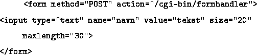
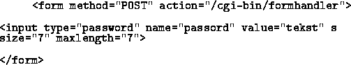
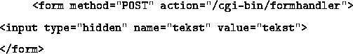
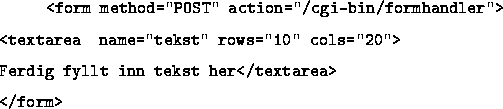

value, size og maxlength er valgfrie. Tekstfeltet får lengde 20 hvis ikke noe er oppgitt.

Dette er et normal tekstfelt, men det som skrives blir ikke synlig på skjermen.

Disse feltene er ikke synlige på skjermen i det hele tatt, og kan dermed ikke skrives inn i. De kan brukes for å sende med stateinformasjon til server og skript.

Her kan man skrive inn mange linjer tekst. Antall linjer er spesifisert med rows attributtet og bredden med cols attributtet. Begge disse må være med.